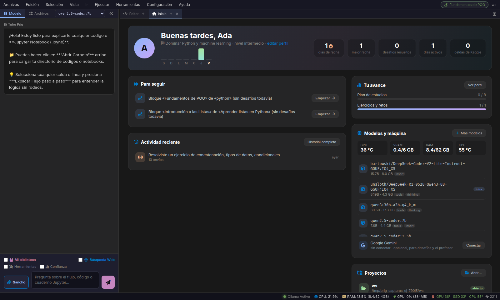
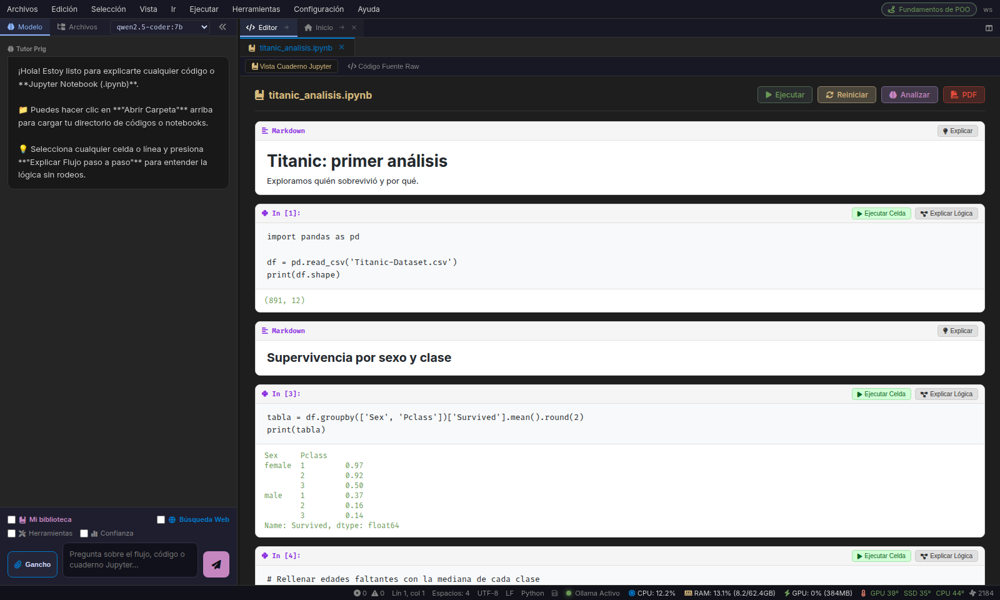
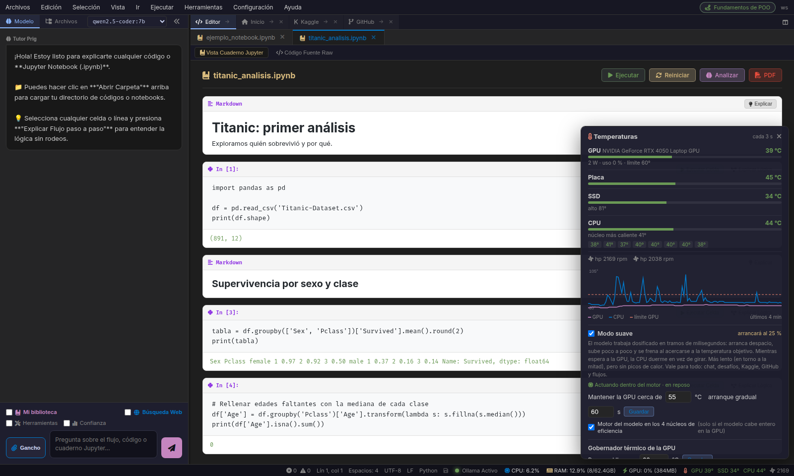

Programación Guiada por Razonamiento Semántico Local
Prig trasciende los autocompletadores tradicionales. Integra un Director de IA 7B autónomo que analiza el 100% de tu código mediante Árboles Sintácticos (AST) y Grafos de Flujo (CFG), proyectando corchetes delimitadores y explicaciones tras bambalinas, con Modo Cerebro 60/20/20, menú radial por rueda del ratón y audio-reactividad por hardware.
Ingeniería Diseñada para Cero Desperdicio
Sin dependencias de la nube, sin saturación de GPU y con una capa visual no obstructiva.
Director IA 7B con 6 Lentes Analíticas
Razonamiento en tiempo real sobre el código completo con rotación de lentes: Arquitectura SRP, Complejidad O(N)→O(1), Cláusulas de Guarda, Concurrencia Asíncrona, Tipado e Invariantes y Clean Code.
OLLAMA / 7B REASONINGCompresión AST & Grafo de Símbolos
Extractor sintáctico profundo que descompone módulos en firmas, dependencias y puntos críticos, reduciendo el consumo de tokens en más del 85% al 92% en el Cerebro IA.
>85% TOKEN REDUCTIONCorchetes No Obstructivos con Scroll Lock
El modelo nunca tapa tu código ni mueve la cámara del editor: dibuja grandes corchetes delimitadores y vectores explicativos en capas z-index inferiores sincronizadas al scrollear.
NON-OBSTRUCTIVE UIModo Cerebro 60/20/20 (Ctrl + Alt)
Presiona Ctrl+Alt para minimizar el código como minimapa HUD superior izquierdo y abrir el diálogo central con el modelo y el mecha ASCII. Esc regresa al instante.
DUAL WORKSPACEMenú Deslizante por Rueda del Mouse
Pulsa el botón central del mouse para desplegar un selector radial flotante con los archivos del workspace directamente sobre la posición del cursor, cerrándose con un clic exterior.
RADIAL FAST NAVAudio FFT y Gobernador Térmico
Espectrograma reactivo de 32 bandas conectado al bus de audio de PulseAudio/PipeWire y monitor térmico nativo con modo suave para evitar throttling de hardware.
FFT 32-BANDS & THERMALExplora las Vistas del Ecosistema
Cambia entre pestañas para inspeccionar la experiencia del programador en cada flujo de trabajo.
def __init__(self):
self.cache = {}
async def transformar():
if not data: return
for item in data:
yield process(item)
return result
Atajo: Esc para volver
PENSAMIENTO (Chain-of-Thought):
1. Identificación de función transformar() en línea 4 con iteración secuencial.
2. Búsqueda lineal en self.cache tiene costo O(N); transformar en hash table O(1).
3. Se añade generador yield para mantener uso de RAM en O(1) bajo streams continuos.
DIÁLOGO DEL DIRECTOR [Titán Mecha]:
"He detectado una oportunidad crítica de optimización en tu pipeline. Al pre-indexar elementos en memoria, eliminamos la latencia de búsqueda en colecciones extensas."
(O) (O)
\___=___/
| [CORE] |
\________/
Supervisando 100% de cambios
$$\text{Attention}(Q, K, V) = \text{softmax}\left(\frac{QK^T}{\sqrt{d_k}}\right)V$$
>>> Pérdida de convergencia: 0.0412 · 21 Papers Seminales disponibles para entrenamiento.
Ahorro Cuántico de Tokens con Memoria AST
Comparativa real de procesamiento entre enviar archivos planos vs. compresión sintáctica de Prig.
Al almacenar únicamente el grafo de dependencias, firmas de métodos con type hints y complejidad ciclomática en una base SQLite local, el modelo razona sobre todo el proyecto instantáneamente sin llenar la ventana de contexto de tu LLM 7B ni provocar alucinaciones.
Capturas del Sistema en Acción
Haz clic en cualquier imagen para verla en resolución completa.

Pantalla de Inicio & Dashboard
Acceso a proyectos recientes, telemetría de GPU/CPU y biblioteca técnica.

Cuadernos Jupyter & Editor Prig
Ejecución interactiva de celdas con soporte para Markdown, LaTeX y gráficas.

Explorador de Datasets Kaggle
Búsqueda y descarga directa de datasets para entrenamiento de modelos ML.

Explorador de Repositorios GitHub
Importación de código, clonación y lectura de árboles de proyectos remotos.

Control Térmico y Modo Suave
Ajuste fino de consumo de hardware para garantizar cero sobrecalentamiento.

Notebooks y Competencias Kaggle
Inspección de soluciones de la comunidad y modelos de alto rendimiento.
Instalación en 3 Pasos (Linux)
Clona el repositorio y ejecuta Prig en tu entorno local con soporte para modelos 7B en Ollama.